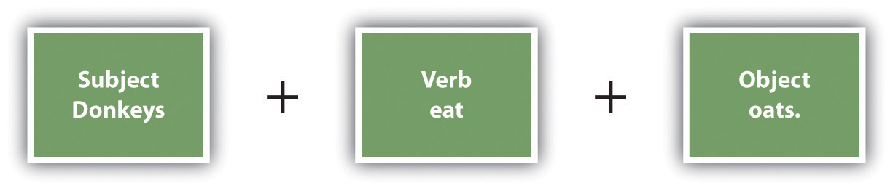
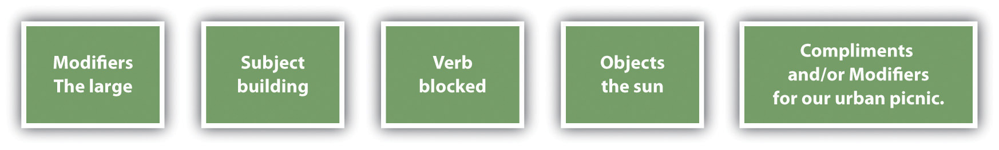

The simplest level of English word order within a sentence is that subjects come first followed by verbs and then direct objects.
Figure 21.1
When you have more complicated sentences, use the following general order.
Figure 21.2
When an English sentence includes more than one adjective modifying a given noun, the adjectives have a hierarchy you should follow. The adjectives that modify the noun within Table 21.1 "Hierarchical Order of Adjectives" show that hierarchical order. You should, however, keep a string of adjectives to two or three. The example includes a longer string of adjectives simply to clarify the word order. Using this table, you can see that “the small thin Methodist girl…” would be correct but “the young French small girl…” would be incorrect.
Some languages, such as Spanish, insert “no” before a verb to create a negative sentence. In English, the negative is often indicated by placing “not” after the verb or in a contraction with the verb.
I can’t make it before 1:00 p.m.
Incorrect example: I no can make it before 1:00 p.m.